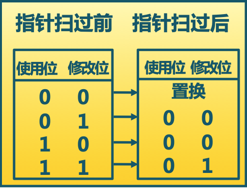
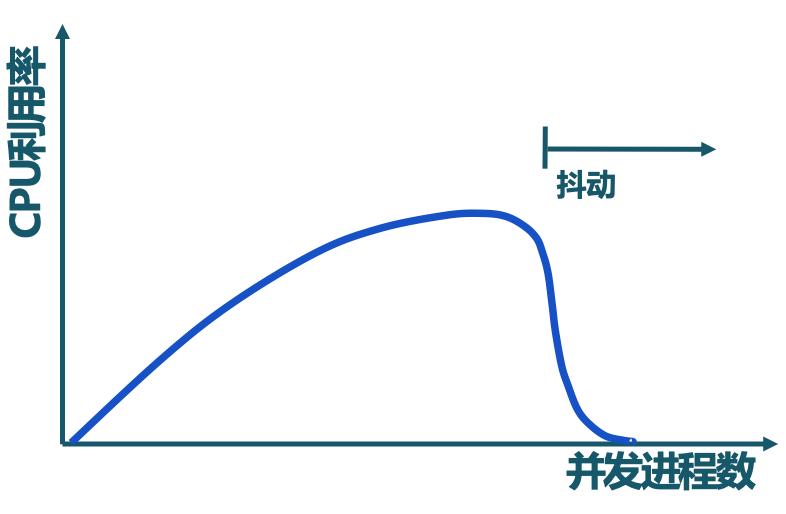
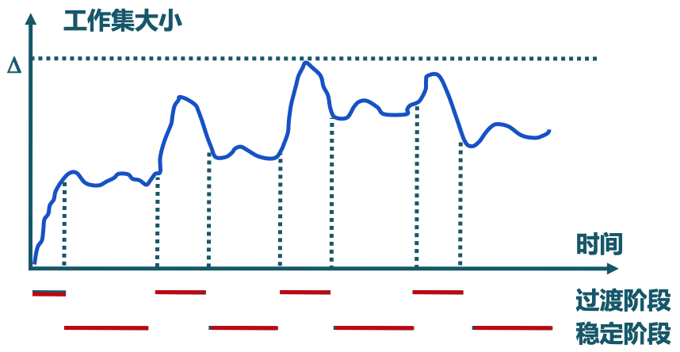
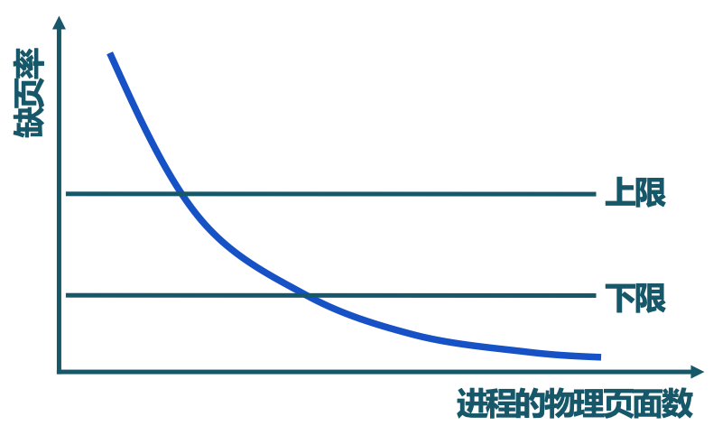
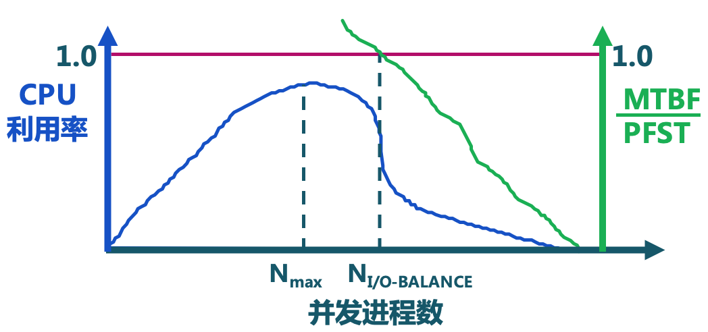

重学操作系统系列，清华大学操作系统课程笔记
Table of contents
页面置换算法的概念
功能：
当出现缺页异常，需调入新页面而物理内存已满时，置换算法选择被置换的物理页帧
设计目标：
尽可能减少页帧的调入调出次数，把未来不再访问或短期内不访问的页帧调出。这与实际运行的程序对存储的访问特征有很大关系（通用置换算法考虑可能得进程访问存储的特征）。如何对未来的情况进行估计呢？
有一些物理页帧被锁定（Frame Locking，pin memory），不能够从物理内存中换出到外存中去
- 描述必须常驻内存的逻辑页面
- 操作系统的关键部分
- 要求响应速度的代码和数据
- 页表项中的锁定标志位（lock bit）
置换算法的评价方法：
记录进程访问内存的页面轨迹，模拟页面置换行为，记录产生缺页的次数。更少的缺页，对应更好的性能
页面置换算法的分类：
- 局部页面置换算法：置换页面的选择范围仅限于当前进程占用的物理页面内
- 最优算法、先进先出算法、最近最久未使用算法
- 时钟算法、最不常用算法（两种对最近最久未使用算法的近似）
- 全局页面置换算法：置换页面的选择范围是所有可换出的物理页面
- 工作集算法、缺页率算法
局部置换算法
假定给一个进程的物理页面数已经确定好了
最优页面置换算法（OPT，optimal）
- 思路：置换在未来最长时间不访问的页面
- 实现：缺页时，计算内存中每个逻辑页面的下一次访问时间，选择未来最长时间不放问的页面
- 特征
- 缺页最少，是理想情况
- 实际系统中无法实现
- 无法预知每个页面在下次访问前的等待时间
- 可以作为其他置换算法的性能评价依据：在模拟器上运行某个程序并记录每一次的页面访问情况；在第二次运行时使用最优页面置换算法
先进先出算法（FIFO，First-In First-Out）
- 思路：选择在内存驻留时间最长的页面进行置换
- 实现
- 维护一个记录所有位于内存中的逻辑页面链表
- 链表元素按驻留内存的时间排序，链首最长，链尾最短
- 出现缺页时，选择链首页面进行置换，新页面加到链尾
- 特征
- 实现简单
- 性能较差，调出的页面可能是经常访问的
- 进程分配物理页面数增加时，缺页并不一定减少（Belady 现象）
- 很少单独使用
最近最久未使用算法（LRU，Least Recently Used）
- 思路：选择最长时间没有被引用的页面进行置换，如某些页面长时间未被访问，则它们在将来还可能会长时间不会被访问
- 实现
- 缺页时，计算内存中每个逻辑页面的上一次访问时间
- 选择上一次使用到当前时间最长的页面
- 特征：最优置换算法的一种近似，开销较大
- 可能实现：
-
- 页面链表：系统维护一个按最近一次访问时间排序的页面链表，链表首节点是最近刚刚使用过的页面，链表尾节点是最久未使用的页面
- 访问内存时，找到相应页面，并把它移到链表首部
- 缺页时，置换链表尾节点的页面
-
- 活动页面栈
- 访问页面时，将此页号压入栈顶，并栈内相同的页号抽出
- 缺页时，置换栈底的页面
-
时钟页面置换算法（Clock）
- 思路
- 仅对页面的访问情况进行大致排序
- 数据结构
- 在页表项中增加访问位，描述页面在过去一段时间内的访问情况
- 各页面组织成环形链表
- 指针指向最先调入的页面
- 算法
- 访问页面时，在页表项记录页面的访问情况
- 缺页时，从指针处开始顺序查找未被访问的页面进行置换（FIFO）
- 特征
- 时钟算法是 LRU 和 FIFO 的折中（对过去的访问情况有考虑，但是置换的就是过去一段时间没有访问的页面，不是去找最久未访问的页面）
- 实现：
- 页面装入内存时，访问位初始化为 0；访问页面（读/写）时，访问位设置为 1
- 缺页时，从指针当前位置顺序检查环形链表，若访问位为 0，则置换该页；若访问位为 1，则将访问位设置为 0（表示从当前时间点重新开始记录是否访问），并指针移动到下一个页面，直到找到可置换的页面
- 改进的时钟算法
- 思路是减少修改页的缺页处理开销（如果有修改，则跳过这一页不做置换，系统定期将修改过的页写到外存中去）。
- 在页表项中增加修改位，并在访问时进行相应修改（如果是读操作，仅修改访问位为1，修改位为 0；如果是写操作，修改位和访问位同时置 1）
- 缺页时，修改页表项标志位，以跳过有修改的页面

最不常用算法（LFU，Least Frequently Used）
- 思路：缺页时，置换访问次数最少的页面
- 实现
- 每个页面设置一个访问计数
- 访问页面时，访问计数加 1
- 缺页时，置换计数最小的页面
- 特征
- 算法开销大
- 开始时频繁使用，但以后不使用的页面很难置换（解决办法：计数定期做衰减右移）
- LRU 和 LFU 的区别
- LRU 关注多久未访问，时间越短越好
- LFU 关注访问次数，次数越多越好
Belady 现象
- 现象：采用 FIFO 等算法时，可能出现分配的物理页面数增加，缺页次数反而升高的异常现象
- 原因：FIFO 算法的置换特征与进程访问内存的动态特征相矛盾，被算法置换出去的页面并不一定是进程近期不会访问的
- 思考：哪些置换算法没有 Belady 现象？LRU 没有 Belady 现象
- 时钟/改进的时钟页面置换算法是否有 Belady 现象？
- 为什么 LRU 页面置换算法没有 Belady 现象？【思考？】
比较
- LRU 算法和 FIFO 本质上都是先进先出的思想
- LRU 根据页面的最近访问时间排序
- LRU 在执行过程中需要动态地调整顺序
- FIFO 依据页面进入内存的时间排序
- FIFO 的页面进入时间是固定不变的
- LRU 可退化为 FIFO
- 如页面进入内存后就没有被访问，最近访问时间和进入内存时间是相同的（视频流）
- LRU 算法性能好，但系统开销较大
- FIFO 算法系统开销较小，会发生 Belady 现象
- Clock 算法是 LRU 和 FIFO 的折中
- 访问页面时，不动态调整页面在链表中的顺序，仅做标记
- 缺页时，再把它移动到链表末尾
- 对于未访问过的页面，Clock 和 LRU 算法的表现一样好
- 对于被访问过的页面，Clock 算法不能记录准确访问顺序，而 LRU 算法可以
全局页面置换算法
局部页面置换算法没有考虑进程访存的差异性（因为分配给进程的页面数确定了）
全局置换算法为进程分配可变数目的物理页面。那分给各个进程多少物理页面呢？进程在不同阶段的内存需求是变化的，这样再不同的阶段分配给进程的内存也需要有所变化。全局置换算法需要确定分配给进程的物理页面数
CPU 利用率与并发进程数的关系
CPU 利用率与并发进程数存在相互促进和制约的关系
- 进程数少时，提高并发进程数，可提高 CPU 利用率
- 并发进程导致内存访问增加
- 并发进程的内存访问会降低访存的局部性特征
- 局部性特征的下载会导致缺页率上升和 CPU 利用率下降

工作集置换算法
一个进程当前正在使用的逻辑页面集合，可表示为二元函数 W(t, $\Delta$)
- t 是当前的执行时刻
$\Delta$称为工作集窗口（working-set window），即一个定长的页面访问时间窗口- W(t,
$\Delta$) 是指在当前时刻 t 前的$\Delta$时间窗口中的所有访问页面所组成的集合 - |W(t,
$\Delta$)| 指工作集的大小，即页面数目
一个进程的工作集的大小随着进程执行时间的变化而变化：

- 进程开始执行后，随着访问新页面逐步建立较稳定的工作集
- 当内存访问的局部性区域的位置大致稳定时，工作集大小也大致稳定
- 局部性区域的位置改变时，工作集快速扩张和收缩过渡到下一个稳定值
常驻集：
在当前时刻，进程实际驻留在内存当中的页面集合
工作集与常驻集的关系：
- 工作集是进程在运行过程中的固有性质
- 常驻集取决于系统分配给进程的物理页面数目和页面置换算法
缺页率和常驻集的关系：
- 如果常驻集包含了工作集，缺页较少
- 工作集发生剧烈变动（过渡）时，缺页较多
- 进程常驻集大小达到一定数目后，缺页率也不会明显下降
工作集置换算法：
- 思路：换出不在工作集的页面
- 窗口大小 𝞽，当前时刻前 𝞽 各内存访问的页引用是工作集，被称为窗口大小
- 实现方法（开销大）
- 访存链表：链表用于维护窗口内的访存页面
- 访存时，换出不在工作集的页面；更新访存链表
- 缺页时，换入页面；更新访存链表
缺页率置换算法
根据缺页之间的间隔来调整将哪些页面放到内存中，哪些页面需要被置换出去
缺页率（page fault rate）：
通常情况下，我们理解的缺页率是缺页的次数和访存次数之间的比值（缺页平均时间间隔的倒数）。影响缺页率的因素有：
- 页面置换算法
- 分配给进程的物理页面数
- 页面大小
- 程序的编写方法
缺页率置换算法（PFF，Page Fault Frequency）：
通过调节常驻集大小，使得每个进程的缺页率保持在一个合理的范围内

- 若进程缺页率过高，则增加常驻集以分配更多的物理页面
- 若进程缺页率过低，则减少常驻集以较少它的物理页面数
实现：
- 访存时，设置引用位标志
- 缺页时，计算从上次缺页时间
$t_{last}$到现在$t_{current}$的时间间隔 - 如果
$t_{current} - t_{last} > T$，则置换所有在$[t_{current}, t_{last}]$时间内没有被引用的页 - 如果
$t_{current} - t_{last} <= T$，则增加缺失页到常驻集中 - 在工作集算法中，选择需要置换的页面是在访问时，开销比较大；在缺页率算法中，是在产生缺页中断时，会去考察缺页率是过低还是过高，将置换页面的操作放到缺页时来进行处理
抖动（thrashing）
在系统中有多少个并发执行的进程在一起执行，对于系统来说是效率最高的
抖动是由于在系统中执行的进程数目过多，每个进程分配到的物理页面数太少，减少到一定程度，不能包含工作集，因此造成大量缺页，频繁置换，进程运行速度变慢。即随着驻留内存的进程数目增加，分配给每个进程的物理页面数不断减小，缺页率不断上升。
操作系统需要在并发水平和缺页率之间达到一个平衡，选择一个适当的进程数目（调节并发进程数）和进程需要的物理页面数目（置换算法）
负载控制
通过调节并发进程数（MPL，Multi-Programming Level）来进行系统负载控制
$\Sigma WS_{i}$= 内存大小- 平均缺页间隔时间（MTBF，Mean Time Between Page Faults）
- 缺页异常处理时间（PFST，Page Fault Service Time）

目标：就整个系统处于均衡的繁忙状态
版权声明
本作品采用知识共享署名 4.0 国际许可协议进行许可，转载时请注明原文链接。